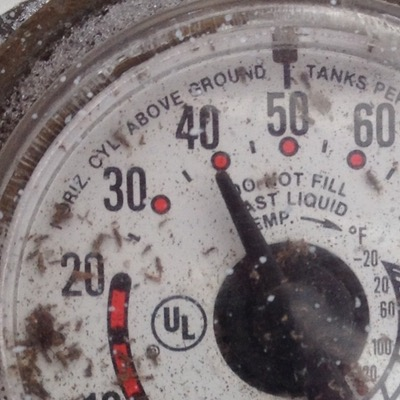
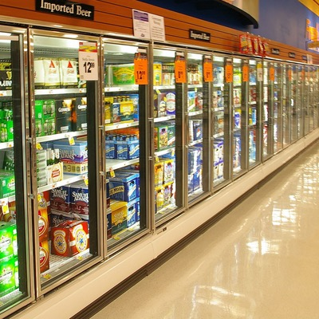
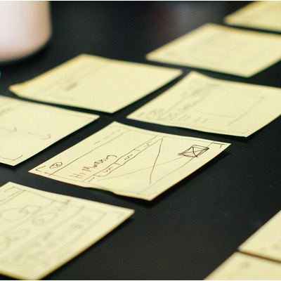
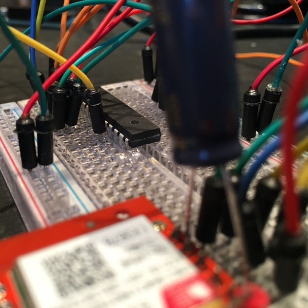
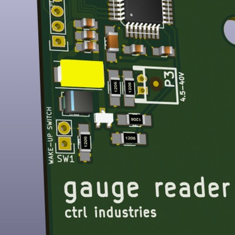
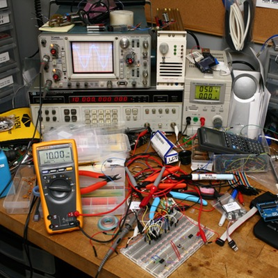
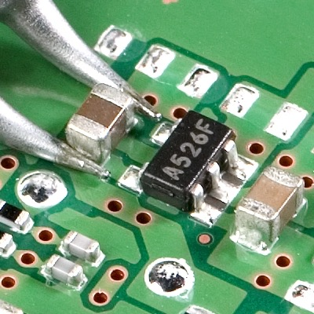
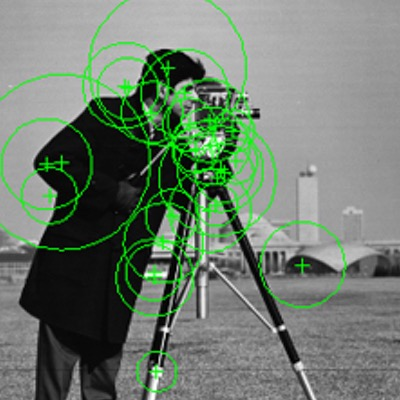
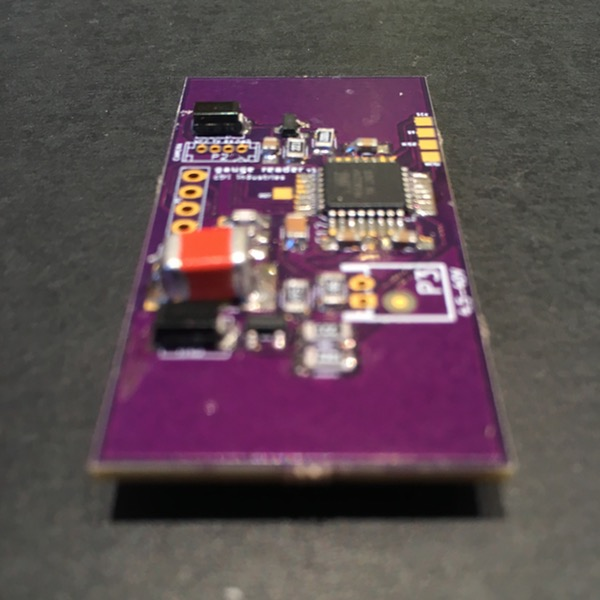

Timeline
My path through the creation of a B2B Internet-of-Things product over the past six months.
-
Idea and Business Opportunity
Bring combined sensor and SaaS technology to industries that have been slow to benefit from the rapid pace of technology innovation over the past decade.
“Analog” industries such as Agriculture, Forestry, Fishing, Construction, Trucking, Manufacturing, Oil and Gas, and many others are yet to fully benefit from technological innovation in the way that information-based and service-based industries have. These “analog” industries require physical hardware to interface with the software world. But hardware development is expensive, complex, and iteration takes too long compared to software development.
But now hardware development is changing. Prototyping cycles have shortened, electronic components can be ordered in small quantities quickly and cost effectively, and there has been a surge in simple-to-program microcontrollers. The production cost for a simple wireless sensor device can be less than $25, and hardware development time can be reduced from a year to months or even weeks! The plethora of Internet-of-Things consumer devices is one result of these changes (fitness trackers, wifi-connected light bulbs, smart refrigerators). However the path to profit for Internet-of-Things consumer devices is not very clear. Are people really willing to pay a monthly service fee to monitor their refrigerator? Or install a new phone app for every device in their house?
On the other hand, there is a clear value proposition for Internet-of-Things innovations for businesses, and more specifically, “analog” businesses. Internet-of-Things devices and services can help them respond to customer service problems faster, mitigate business risks, reduce labor expenses, reduce energy expenses, improve coordination with suppliers, and improve understanding of equipment health. The list goes on and on. -

Propane Gauge Reader
Analog gauge reader for residential and commercial heating and hot water propane tanks. While products exist in this market, they are expensive, slow to setup, overly complex, and aren’t updated frequently in response to customer feedback – a perfect market conditions to disrupt!
A friend’s family member asked “Why isn’t there a way for me to know the real-time level of my customers’ tanks? It seems like this should be easy to solve.” He runs a propane distribution company and has to put a driver in a delivery truck to check and, if low, fill-up customer tanks. And while he has software to estimate customer tank levels based on historical consumption and weather, the software requires accurate data-entry and cannot account for unexpected changes in consumption from visiting guests, vacations, kids going off to college, babies being born, interior renovations, etc.
But I ran in to one big problem while doing market research. Propane is not used much in Washington state relative to other states. According to the U.S. Energy Information Administration, Washington state is ranked 34th in its use of propane as a percentage of all non-vehicle fuels used. Additionally, of the 3.2 billion BTUs of propane consumed in the United States in 2013, just six states consume 74% of it, and I don’t live anywhere near those six states: Texas, Kansas, Lousiana, Iowa, Vermont, and New Hampshire. It doesn’t make much sense to start a business to serve a market that’s hard for me to access. -

Commercial Refrigeration Monitoring
Restaurants, hospitals, grocery stores, school cafeterias, any place that stores food has refrigeration needs. Moreover, those refrigerators need to be monitored so that they meet state health codes and food doesn’t spoil.
Geographically, commercial refrigeration would be a much easier market for a new small business to access. Target customers exist in almost every town and city across the country.
However, the multitude of target customers combined with the relative simplicity of temperature sensing hardware and low margins of food-serving establishments (mostly restaurants) means there is not a lot of room for a profitable product line. The customer acquisition cost alone for a hardware product like this would be untenable, not to mention the ongoing SaaS maintenance costs. There would be little margin left for continued R&D, which is a large part of my value proposition in using a SaaS pricing model with hardware. -

Gauge Reader v2
Build a field-testable prototype.
A family member working in oil and gas for over a decade heard about Gauge Reader and thought the idea had legs but could be applied to much more than propane.
Better understanding the opportunity for a product like this, I focused full-time on building a field-testable prototype, planning out all the aspects necessary for a functioning product. -

Proof-of-Concept
Requirement Definition ➜ System Architecture ➜ Proof-of-Concept ➜ Financial Modeling ➜ Project Plan
I wanted to quickly understand the feasibility of the product, the costs involved, and the knowledge I would need to build a prototype. This included extensive research in- Embedded Systems
- Microcontrollers
- Switched Mode Power Supply Design
- Cellular Communication Hardware
- M2M Cellular Service Technologies and Providers
- Embedded Camera Modules
- Power Consumption Optimization
Following this research, I sourced the minimally necessary components and built a prood-of-concept.
-

Electronic Circuit Design
In one week, I taught myself Electronic Design Automation software and the Electrical Engineering concepts I needed to create a printed circuit board.
This was very much a just-in-time learning process, and I quickly iterated between periods of research and production.
Within two weeks, I had a circuit board design sent off to a PCB fabricator. During the two week turn-around time I had plenty of other work to keep me busy, including tooling setup, component sourcing, and the server-side software with which Gauge Reader would communicate. -

Hardware Prototype Tooling
A lot of tooling is needed for hardware prototyping. Some of this I already owned; some I needed to purchase.
Over a couple weeks I outfitted an electronics workbench with the tools that would allow me to efficiently prototype and iterate on hardware design.- Soldering Station
- Hot Air Rework Station
- Surface Mount Reflow Oven
- Regulated DC Power Supply
- FTDI Microcontroller Programmer
- Electronics Tweezers
- Solder Paste
- Flux
- Solder Wick
- Solder Stencils
-

Component Sourcing
Sourcing electrical components can be a full time job by itself. Multiple variables need to be compared to find the components with the optimal balance of characteristics.
I compared hundreds and sometimes even thousands of surface mount passive components like resistors and capacitors, board-to-board connectors, battery holders, waterproof enclosures, and mounting hardware.
For each of these components, variables such as price, physical size, voltage and current tolerance, operating temperature range, temperature coefficient, heat dissipation, equivalent series resistance, and quiescent current needed to be evaluated at the same time. Additionally there is an art to being able to quickly read and extract the necessary information from electrical component datasheets. -

Computer Vision
Computer Vision enabled a key component of Gauge Reader: the ability to flexibly translate an analog gauge reading to a digital value.
Computer Vision allows a computer to understand information about the physical world – or in my case, allows a computer to read various types of analog gauges.
Just like electronic hardware design and production, Computer Vision was an area about which I knew very little. After reviewing multiple academic papers1, 2, 3, 4 on using Computer Vision with analog gauges, I began using Python and OpenCV to design an algorithm that could quickly and accurately read the image of an analog gauge.
Within three weeks I had an algorithm that could read many analog gauges in addition to a web-based tuning UI so that the system could quickly be adapted to new gauge faces. Pretty awesome to see the messy physical world translated to the binary world. -

PCB Iteration
By this time I had iterated twice on the design of the PCB during respites from the mind-bending gymnastics of Computer Vision matrix mathematics.
With a beautiful, well-functioning, power efficient PCB, it was time to integrate all the pieces and begin testing. -
Field-Testable Prototype
Verify all initial design requirements and stress the hardware before deploying it in a customer installation.
Beyond the basic functionality, I needed to ensure the hardware would stand up to the harsh conditions that are normal for industries it was designed to serve. Oil and gas, construction, forestry all require functioning equipment regardless of the natural (and man made conditions) thrown at it. -